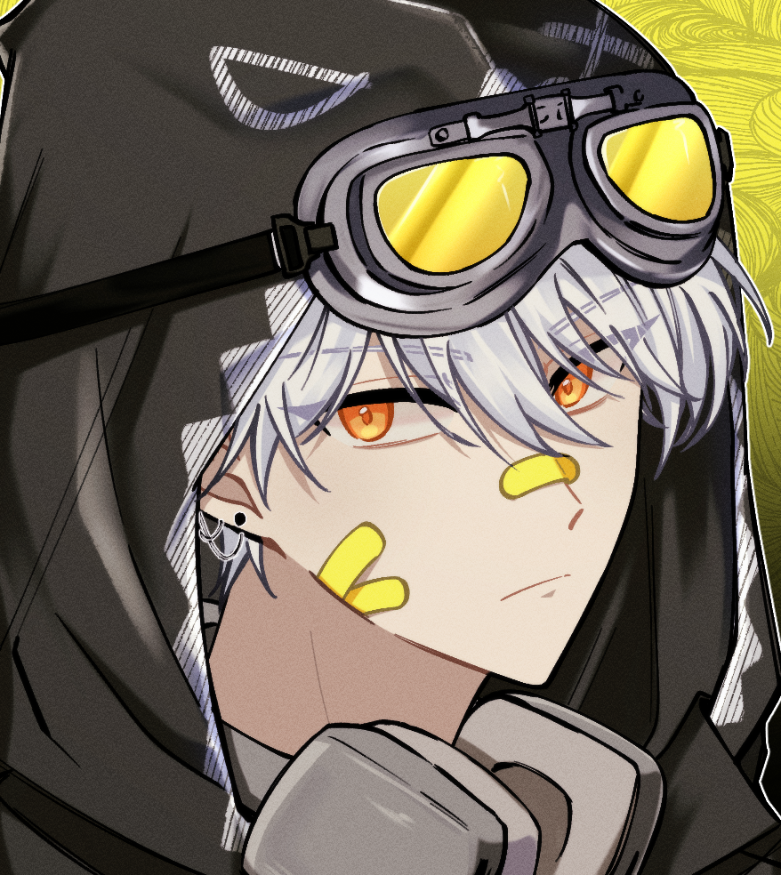

노모스
양도 가지고 싶지만, 가챠도 재미있고. 진짜 제 마음은 뭘까요?
2026년 7월 28일 오후 04:28

고스트
가져. (프로게이머 양 던져줌) 달라며.
2026년 7월 28일 오후 04:29
노모스
(드물게 방ㅡ긋 웃는다) 개이득. (어디에선가 또 이상한 말 습득함)
2026년 7월 28일 오후 04:32
고스트
야!!! 어떤 새끼가 이자식한테 '개이득' 이딴 말 가르쳤어!!!
2026년 7월 28일 오후 04:32
노모스
좋은 뜻 아닙니까?
2026년 7월 28일 오후 04:33
고스트
뜻은 좋은 게 맞는데 좋은 말은 아니거든? 그리고 그거 줬으니까 내가 줬던 건 내놔.
2026년 7월 28일 오후 04:34
노모스
(저격수 양 인형 돌려준다) 근데 시헌 거는 때 탈까봐 걱정이군요. 워낙 하얘서…….
2026년 7월 28일 오후 04:36
고스트
(뭐지? 일단 받긴 했다.) 아니, 이거 말고.
2026년 7월 28일 오후 04:37
노모스
아, 맞다. 반지. (돌려준다)
2026년 7월 28일 오후 04:37
고스트
(둘 다 가진다고 떼쓸 줄 알았는데 의외로 순순히 돌려줘서 의심의 눈초리 함) ……이건 다시 돌려줄까? (저격수 양 흔들)
2026년 7월 28일 오후 04:38
노모스
……… 사실 반지는 갖고 싶었어요. (의젓하게 떼 안 썼다는 어필 중)
2026년 7월 28일 오후 04:39
고스트
(에휴. 저격수 양 인형에 반지 끼워서 다시 휙 던져준다.) 그냥 다 가져라.
2026년 7월 28일 오후 04:40
노모스
(꽉 안고 싱글벙글 웃으면서 간다)
2026년 7월 28일 오후 04:42